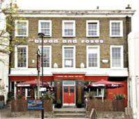

Meetings November to December 2026
Meetings on the second Tuesday of each month at 8 pm, currently at:
The Bread & Roses, 68 Clapham Manor Street,
London SW4 6DZ
(a turning off Clapham High Street - nearest tubes: Clapham North and Clapham Common.
The Bread and Roses is opposite
the end of Navy Street).
View a map of the area
| 10 November |
Police and the Community:
Joseph Seddon, the new LGBT Community Liaison Officer for Lambeth and Southwark, talks about his role in making London a safer place for gay people and his experience in the police force as a gay man. |
|
|
| 8 December |
Discovering Gabriel D'Esty (1897–1968): a theatrical and partly imagined life in the Home Counties.
Dr Clifford Williams (author of Courage to Be) describes how he uncovered the fascinating life of a theatrical gay man who found solace in a quiet country cottage, where he lived with his Alsatian dog and tended a lovely garden. This story has been put together using diaries, photographs, newspaper cuttings, other ephemera and stories from a man who knew Gabriel and who visits his grave every Christmas to lay a wreath. |
|
Back to top of page